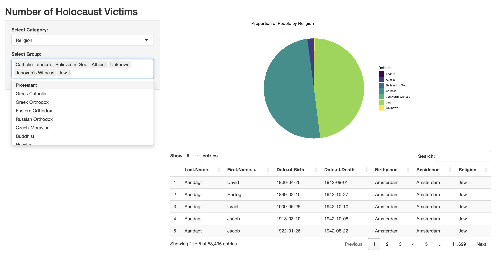

Data Analysis Portfolio | 数据分析作品集
Economics and Crime Patterns | 经济与犯罪模式分析
The Interplay Between CPI Changes and Vehicle Theft Frequencies
Jan./2024 - April/2024
The study employs multiple regression models to identify correlations between various CPI categories and the frequency of vehicle thefts, offering insights that could influence economic and crime prevention policies.
Please visit via GitHub: https://github.com/FXXFERMI/Economics-and-Crime-Patterns
- This repository contains the research paper, datasets, and supplementary materials
To see the data visualization interactive app: https://siqi-fei.shinyapps.io/VehicleTheft_Inflation/
《消费者价格指数变化与车辆盗窃频率之间的相互作用》
一月/2024 - 四月/2024
负责研究探讨了消费者价格指数（CPI）变动对多伦多车辆盗窃率的影响
使用多元回归模型分析不同CPI类别与车辆盗窃频率之间的相关性
管理和分析大量数据集，确保分析过程的严谨性和结果的准确性
研究提供了可用于影响经济政策和犯罪预防策略的重要见解
详细数据模型，代码及论文可以在GitHub中查看： https://github.com/FXXFERMI/Economics-and-Crime-Patterns
此外，也可以通过访问数据可视化App了解研究数据: https://siqi-fei.shinyapps.io/VehicleTheft_Inflation/

Income and Gender | 社会政治数据分析
Forecasting the American Voters’ Choices in 2018
Jan./2024 - April/2024
The study examines the predictive power of income and gender on the voting behavior in the 2018 US elections using the Cooperative Congressional Election Study (CCES) 2018 dataset.
Please visit via GitHub:https://github.com/FXXFERMI/Economics-and-Crime-Patterns
- This repository contains the research paper, datasets, and supplementary materials
To see the data visualization interactive app: https://siqi-fei.shinyapps.io/VehicleTheft_Inflation/
《收入与性别：预测2018年美国选民的选择》
一月/2024 - 四月/2024
关于2018年美国选举的研究，分析了收入和性别对选民投票行为的预测力
利用2018年合作国会选举研究（CCES）数据集，通过统计模型检验假设
开发了复杂的数据分析流程，包括数据清理、处理和多变量分析，确保研究结果的准确性和可靠性
研究成果增进了对选民行为驱动因素的理解，为未来选举策略和政策制定提供了数据支持
详细数据模型，代码及论文可以在GitHub中查看：https://github.com/FXXFERMI/Political-support-in-the-United-States
Model Prediction | 预测建模
NFL Passing Efficiency Forecasting
The analysis and predictive modeling work for the 2023 NFL season, focusing on forecasting the passing efficiency of quarterbacks using the passing expected points added (passing_epa) metric.
Please visit via GitHub: https://github.com/FXXFERMI/NLP_pred
- This repository contains the research paper, datasets, and supplementary materials
NFL传球效率预测
一月/2024 - 四月/2024
分析并预测2023 NFL赛季中四分卫的传球效率，使用了传球预期得分增加（passing_epa）指标
运用统计分析和机器学习技术构建预测模型，精确计算四分卫在比赛中的表现
设计并实现了一套完整的数据处理流程，从数据收集到清理，再到最终的分析和可视化
通过模型优化和算法调整，提高了预测准确性，为战术决策提供数据支持
详细数据模型，代码及论文可以在GitHub中查看：https://github.com/FXXFERMI/NLP_pred
### Modeling the Efficacy of Possession in Football
The study examines the impact of ball possession on the scoring outcomes of football matches, specifically within the Bundesliga league over the season 2023 to 2024. By employing both Poisson and negative binomial regression models, this research seeks to unravel the nuanced relationship between the frequency of ball touches by the home team and their success in scoring goals.
Please visit via GitHub: https://github.com/FXXFERMI/Modelling_association_football_scores
- This repository contains the research paper, datasets, and supplementary materials
足球控球效率建模
一月/2024 - 四月/2024
利用泊松回归和负二项回归模型，分析德甲联赛中球队控球对比赛进球结果的影响
处理和分析大量比赛数据，提炼出球队触球频率与进球成功率之间的关系
开发了一个用于数据输入和结果可视化的交互式界面，增强了数据呈现和用户交互体验
协调团队合作，确保研究的有效性和数据分析的准确性，通过细致的数据校验提高了项目质量
详细数据模型，代码及论文可以在GitHub中查看：https://github.com/FXXFERMI/Modelling_association_football_scores
Data Visualization | 数据可视化
《通过Shiny应用探索大屠杀的伦理和人文参与》
六月/2023 - 九月/2023
- 开发了一个Shiny应用，用于交互式地展示大屠杀受害者的民族来源和人数，特别关注奥斯威辛集中营的受害者
- 项目灵感来源于Jamelle Bouie 2022年关于人类悲剧数量化的文章，旨在通过数据的尊严呈现，致敬受害者的记忆
- 为用户设计了一个可以根据出生地、宗教、生日或地区等分类，探索特定群体的用户友好界面
- 通过细致的数据分析和编程实现，确保了信息的准确性和视觉展示的敏感性
详细数据模型，代码及论文可以在GitHub中查看：https://github.com/FXXFERMI/Shiny-Visualization
Shiny App可以在不同浏览器，通过链接查看：https://siqi-fei.shinyapps.io/Holocaust_Victims/
